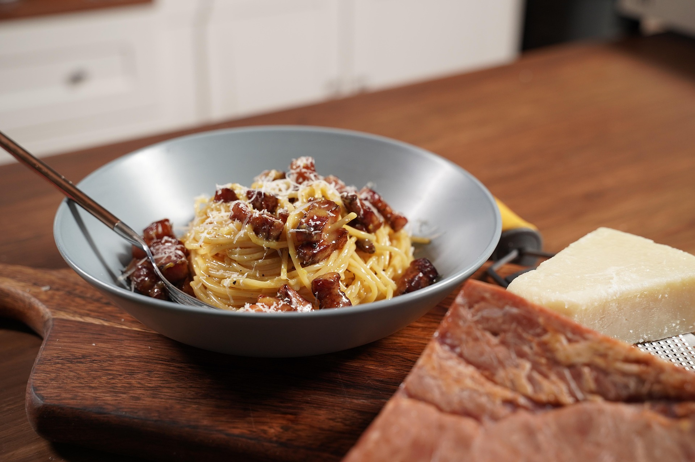

The Best Carbonara
Home

Description
Jump to recipe
A recipe from the actual streets of Rome!
This Carbonara is bound to be some of the best you've had
and it all comes from a little restaurant called 'Luciano-Cucina Italiana'
Ingredients
- 280g spaghetti (making sure to use a bronze cut; something like Dececco)
- 4 egg yolks
- 200g guanciale in 1cm cubes
- 30g grana padano, grated
- 20g pecorino romano, grated
Steps
- Cook pasta according to package (make sure to follow the 'al dente' timing)
- Fry the guanciale cubes in order to make them crispy on the outside and soft on the inside.
Start on medium-high heat to get a nice sear then lower the temperature to finish them off.
RESERVE THE FAT!
- In a bowl, whisk together the egg yolks, the grana padano,
and the pecorino romano, and the melted fat from the guanciale.
- Let the mixture rest
- Once pasta is cooked, combine with the mixture above with fresh ground black pepper, and the cubes of guanciale.
Make sure to vigorously mix them together so that you get an almost cream like sauce.
- Plate the pasta, and sprinkly some fresh pecorino romano and some more ground black pepper.
- Serve. Making sure the pasta isn't too hot or too cold. Slightly above room temperature.
Back to Top